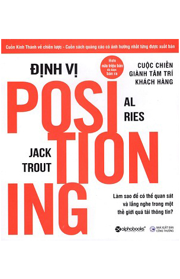

Khái niệm Positioning – Định vị thương hiệu lần đầu tiên được giới thiệu bởi chuyên gia chiến lược marketing người Mỹ là Jack Trout qua một bài viết đăng trên tạp chí Industrial Marketing năm 1969. Sau đó, Jack Trout cùng với Al Ries phát triển khái niệm này trong cuốn sách Định vị – Cuôc chiến giành tâm trí khách hàng xuất bản năm 1981, và kể từ đó Định vị đã làm thay đổi hẳn phương thức marketing truyền thống và đi vào cuộc sống của các doanh nghiệp.
Định vị thương hiệu: Ai nên đọc cuốn sách này?
Đầu tiên là các giám đốc doanh nghiệp, những vị tổng tư lệnh đích thực trong thời bình. Bất kể ngành nghề, bất kể quy mô và bất kể loại hình doanh nghiệp. Tất cả đều có chung một thách thức khốc liệt: làm thế nào để khách hàng nhớ đến thương hiệu/ sản phẩm của mình đầu tiên, yêu thích nhất và mua thường xuyên.
Trong một ngành nghề có bao nhiêu doanh nghiệp tham gia cạnh tranh? Hàng chục, hàng trăm hoặc hàng ngàn, hàng chục ngàn. Rất nhiều. Khách hàng nhớ được bao nhiêu tên thương hiệu trong một ngành nghề? Theo lý thuyết về “thang định vị” của Al Ries & Jack Trout, thông thường chỉ có ba tên thương hiệu được nhắc đến mà thôi. Quá ít.
Chả thế mà các tác giả đã đặt tên cho cuốn sách là Cuộc chiến giành tâm trí khách hàng. Bản thân từ “cuộc chiến” đã nói lên sự khốc liệt rồi. Cuộc chiến về nhận thức còn gian khó gấp bội. Bạn biết rồi đấy. Khách hàng ngày nay tinh nhạy, nhiều lựa chọn và khó tính biết chừng nào. Để giúp doanh nghiệp có được một chỗ đứng trong ngăn trí nhớ chật hẹp của họ, các tác giả đã đúc kết hàng loạt quy luật về nhận thức và tâm lý hành vi rất hữu ích. Tôi tin rằng nếu các chủ doanh nghiệp dành chút thời gian quý báu của họ đọc những ví dụ thất bại cũng như thành công trong cuốn sách họ sẽ hiểu và chia sẻ nhiều hơn với những vị tướng thân cận của họ là các giám đốc marketing và giám đốc thương hiệu.
Đối với những chiến binh trên mặt trận marketing này, đây đúng là cuốn “kinh thánh” về nhiều mặt.
Họ sẽ hiểu rằng thực tế chưa chắc đã là thực tế. Nhận thức của khách hàng mới là thực tế. Đấy là lý do tại sao xe Lexus vượt qua hàng loạt tên tuổi xe sang lừng danh của Đức để được xem là chiếc xe sang trọng nhất.
Họ sẽ hiểu rằng định vị không phải là tạo ra những cái mới mà là tối ưu hoá những gì đã có trong tâm trí của khách hàng. Đấy là lý do tại sao New Coke lại thất bại thảm hại.
Và họ sẽ hiểu rằng có những việc tưởng chừng như đơn giản như đặt tên thương hiệu hay sản phẩm lại có thể quyết định đến sự thành công của doanh nghiệp nhiều đến thế. Đó là một trong những lý do tại sao bia Heineken lại chiếm giữ và duy trì được vị trí dẫn đầu là bia nhập khẩu có thị phần lớn nhất tại Mỹ.
Một lý do đáng giá khác nên đọc cuốn sách này chính là từ chính Al Ries & Jack Trout. Hai ông đã nổi danh với hàng loạt đầu sách được yêu thích khác như 22 quy luật marketing, 22 quy luật xây dựng thương hiệu và Cuộc chiến phòng họp (Al Ries viết cùng con gái Laura Ries), Khác biệt hay là chết (Jack Trout),Tập trung để khác biệt (Al Ries). Tôi không có ý nói về kiến thức uyên thâm của họ về chiến lược thương hiệu vốn đã được giới marketing khắp thế giới biết đến rộng rãi. Tôi thích phong cách viết ngắn gọn và cô đọng về hành văn của hai tác giả. Bạn sẽ chủ yếu bắt gặp những câu đơn. Kể cả những câu phức hai mệnh đề thì bao giờ cũng chỉ có một ý. Trực diện và trong sáng về ý tưởng. Độc giả hầu như không phải nhíu mày tự hỏi mình liệu có hiểu ý tác giả hay không. Họ có khả năng đơn giản hoá những vấn đề học thuật để phù hợp với nhiều đối tượng bạn đọc vốn rất khác nhau về kiến thức về marketing. Những điều này giúp bạn có cảm giác hứng thú muốn đọc đến hết cuốn sách từ ngay những trang đặt vấn đề đầu tiên.
Tôi tin rằng những kiến thức quý báu đúc kết từ cuốn sách Định vị thương hiệu – Cuộc chiến giành tâm trí khách hàng sẽ cực kỳ hữu ích cho các chủ doanh nghiệp và những người làm nghề marketing tại Việt Nam. Ngay bản thân tôi làm lâu năm trong ngành tư vấn thương hiệu cũng vẫn thường xuyên nhờ cậy đến những trang trong cuốn “Kinh thánh về marketing” này trong nhiều tình huống cụ thể. Vì nhiều khi sự khác nhau về hiệu quả xây dựng thương hiệu khác nhau ở khả năng vận dụng những quy luật vốn đã trở thành bất biến. Những quy luật đã được đúc kết từ những sai lầm đau đớn của rất nhiều thương hiệu trên thế giới.
Cảm ơn Al Ries & Jack Trout đã viết một cuốn sách tuyệt vời như vậy!